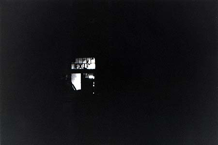
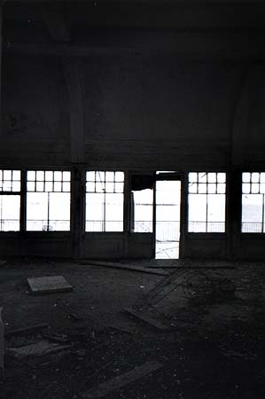
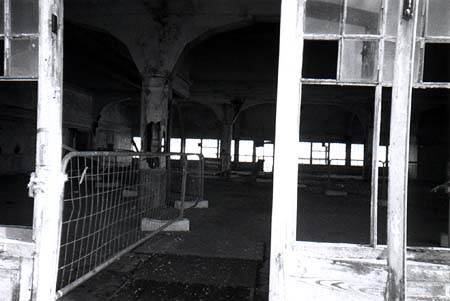
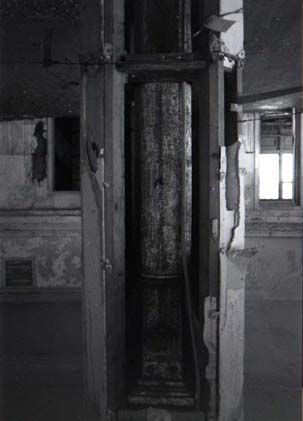

Jeremy Day >> Projects >> Take a promenade along West Pier >>
|
Dark in here
We've gone beyond the reach of electricity. Inside the remains of the theatre our eyes slowly adjust to a medley of painted signs for fortune tellers, entertainments and food hidden in a place possibly too dark for any camera, certainly too dark for mine. I look back, to check there's still a way out. |
| Not quite decayed enough In the far corner, steep pigeon-shit encrusted steps lead up from the dark guts of the Theatre into an open space above, once a spacious and luxurious dining room, then an unpretentious caff with super sea-views, then a drafty room, unused and boarded up, behind the last of the tatty arcades. It's about the most structurally sound room on the Pier now, and even sees use now and then. Most recently, it was being the stylishly dilapidated location for a pop video, and the odd weird object marks the passage of singers, location stylists, crew. Maybe that's what the Christmas trees were about; certainly there seems to be a bare barbed-wire Christmas tree toppled over on the floor. Or maybe you can rent it for parties, if you pay enough; this whole place is a fundraiser, after all (our tour is costing £10 a head). The tour guide points to some particularly spectacular streaks of rust staining the wall. "They added that," she said, "It wasn't quite decayed enough." |
| Promenade closed Usually you can walk all around the high! balcony outside the Dining Room, but they've had problems with the boards on the Eastern side, so we're asked to walk carefully across to the west side. In the midst of all the decay, a little red sign saying PROMENADE CLOSED looks kind of incongruous. |
|
Fashion changing structure
Parts of the structure had been peeled back to show the progression from the original Victorian pier, a breathtaking special effect of spidery yet rock-hard iron which seemed to float suspended above the choppy water of the English Channel, to the solid plebian security of the late 50s/60s, whose chunky shapes cater to nervous parents and scowling mistrusters of the ocean. As part of this movement, the original slender iron pillars of the dining room were given broad cladding columns of wood, paper and plaster, not because the pillars weren't strong enough, but because they didn't look strong enough, and made the diners nervous. At the same time the fussiness of the Victoriana (almost visible in the gloomy interior) was tucked back into a smooth modern geometric shape. Out into the sun. |